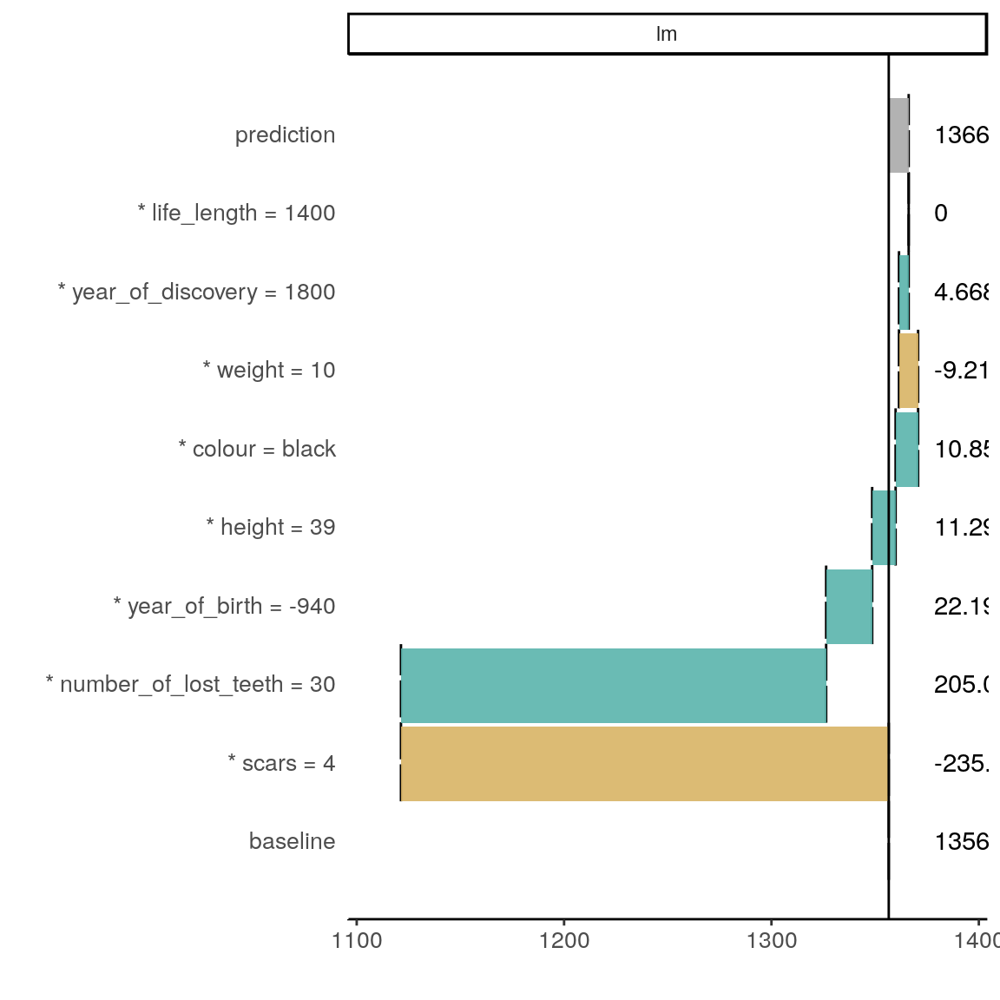
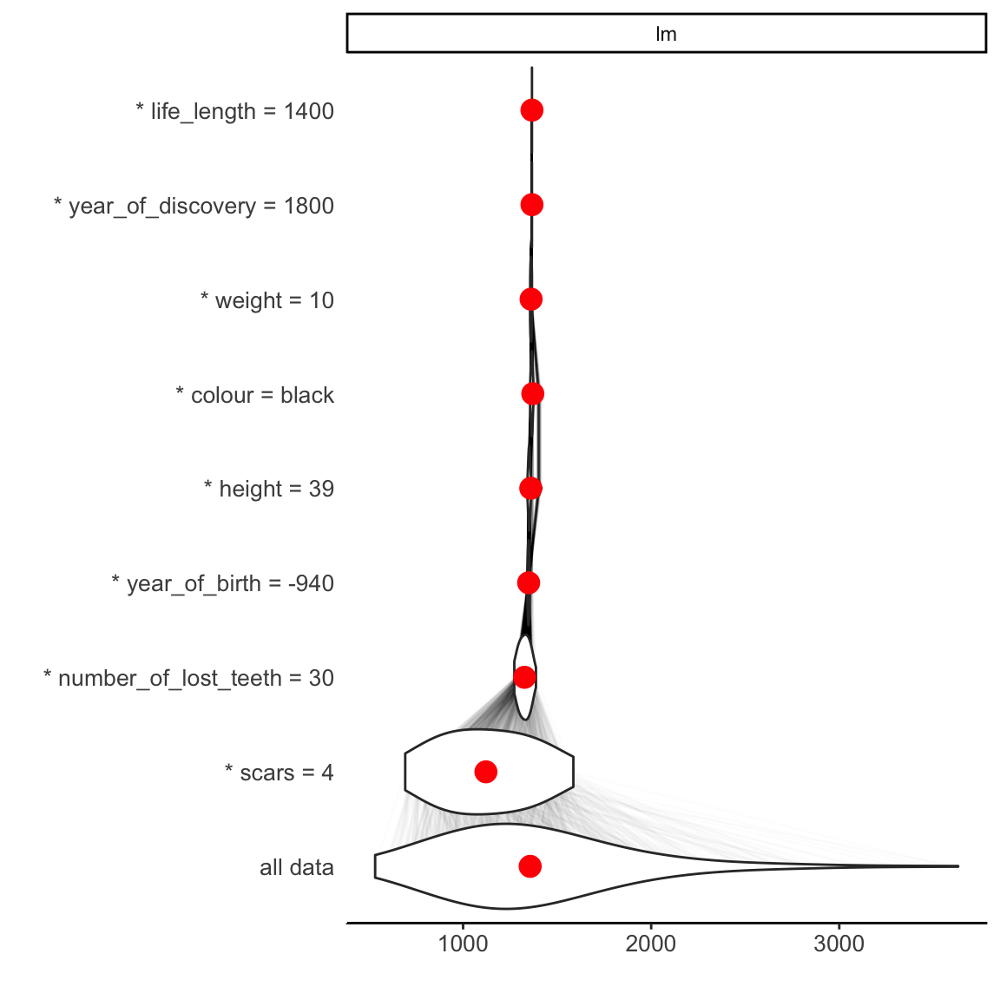
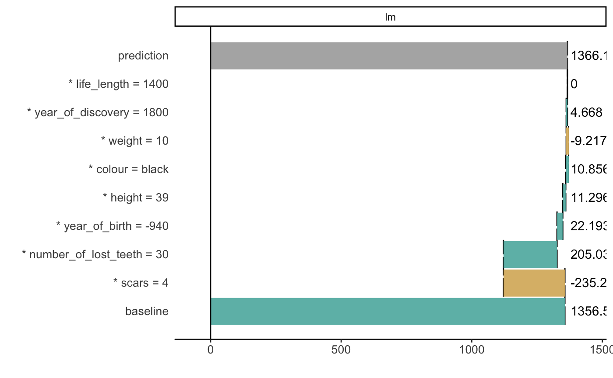
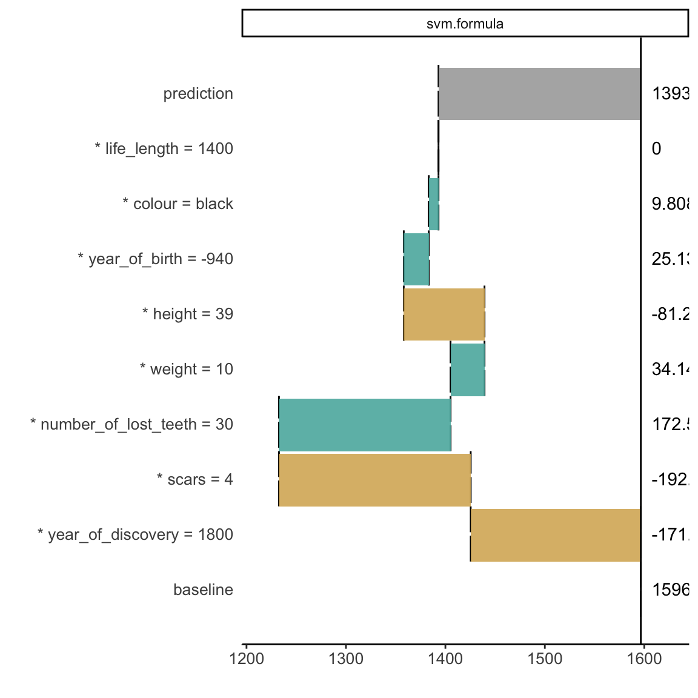
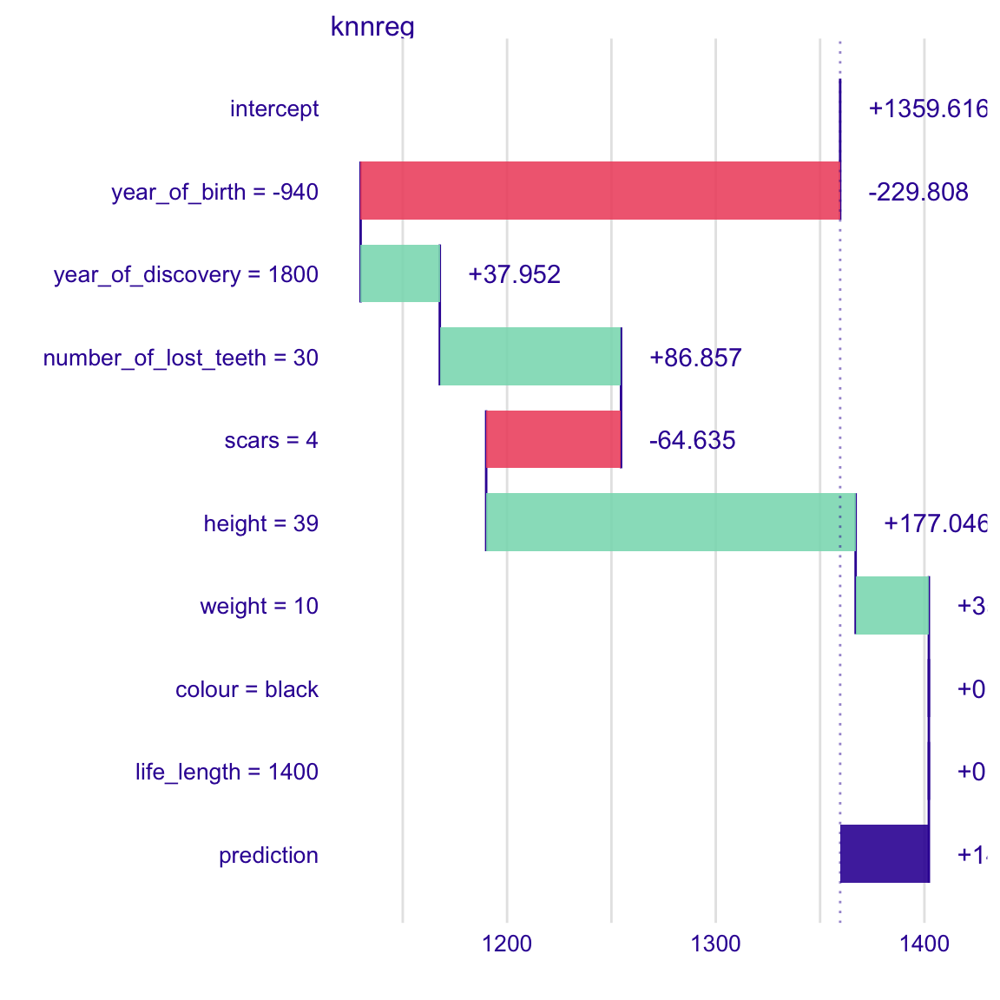
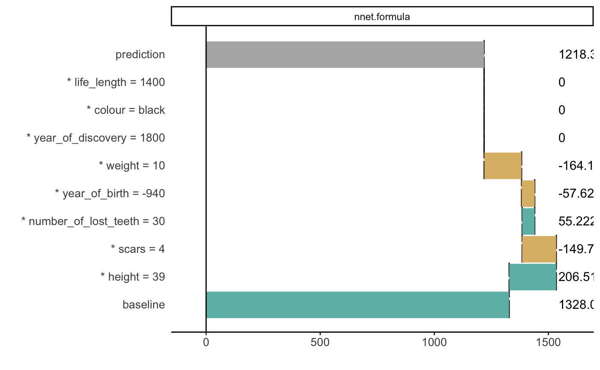

iBreakDown plots for regression models
Dariusz Komosinski
2019-02-28
vignette_breakDown2_regression.RmdHere we will use the dragons data to present the iBreakDown package for regression models.
# devtools::install_github("pbiecek/DALEX")
library(DALEX)
library(ggplot2)
library(iBreakDown)
head(dragons)#> year_of_birth height weight scars colour year_of_discovery
#> 1 -1291 59.40365 15.32391 7 red 1700
#> 2 1589 46.21374 11.80819 5 red 1700
#> 3 1528 49.17233 13.34482 6 red 1700
#> 4 1645 48.29177 13.27427 5 green 1700
#> 5 -8 49.99679 13.08757 1 red 1700
#> 6 915 45.40876 11.48717 2 red 1700
#> number_of_lost_teeth life_length
#> 1 25 1368.4331
#> 2 28 1377.0474
#> 3 38 1603.9632
#> 4 33 1434.4222
#> 5 18 985.4905
#> 6 20 969.5682new_observation <- dragons_test[1,]
new_observation#> year_of_birth height weight scars colour year_of_discovery
#> 1 -938 39.18619 10.02391 4 black 1800
#> number_of_lost_teeth life_length
#> 1 30 1375.38Linear regression
First, we fit a model.
m_lm <- lm(life_length ~ . , data = dragons)To understand the factors that drive predictions for a single observation we use the iBreakDown package.
Now we create an object of the break_down class. If we want to plot distributions of partial predictions, use argument keep_distributions.
bd_lm <- local_attributions(m_lm,
data = dragons_test,
new_observation = new_observation,
keep_distributions = TRUE)We can simply print the result.
bd_lm#> contribution
#> lm: baseline 1356.562
#> lm: * scars = 4 -235.221
#> lm: * number_of_lost_teeth = 30 205.037
#> lm: * year_of_birth = -940 22.193
#> lm: * height = 39 11.296
#> lm: * colour = black 10.856
#> lm: * weight = 10 -9.217
#> lm: * year_of_discovery = 1800 4.668
#> lm: * life_length = 1400 0.000
#> lm: prediction 1366.174
#> baseline: 0Or plot the result which is more clear.
plot(bd_lm)
Use the start_baseline argument to set the origin of plots.
plot(bd_lm, start_baseline = TRUE)
Use the plot_distributions argument to see distributions of partial predictions.
plot(bd_lm, plot_distributions = TRUE)
For another type of models we proceed analogously. However sometimes we need to create our own predict function (see nnet example).
randomForest
library(randomForest)
m_rf <- lm(life_length ~ . , data = dragons)
bd_rf <- local_attributions(m_rf,
data = dragons_test,
new_observation = new_observation)
head(bd_rf)#> $variable
#> [1] baseline * scars = 4
#> [3] * number_of_lost_teeth = 30 * year_of_birth = -940
#> [5] * height = 39 * colour = black
#> [7] * weight = 10 * year_of_discovery = 1800
#> [9] * life_length = 1400 prediction
#> 10 Levels: * colour = black * height = 39 ... prediction
#>
#> $contribution
#> [1] 1356.561920 -235.220797 205.036772 22.192939 11.296134
#> [6] 10.856097 -9.216737 4.667763 0.000000 1366.174091
#>
#> $variable_name
#> [1] baseline scars number_of_lost_teeth
#> [4] year_of_birth height colour
#> [7] weight year_of_discovery life_length
#> [10]
#> 10 Levels: baseline colour height life_length ... year_of_discovery
#>
#> $variable_value
#> [1] 1 4 30 -940 39 black 10 1800 1400
#> Levels: -940 1 10 1400 1800 30 39 4 black
#>
#> $cummulative
#> [1] 1356.562 1121.341 1326.378 1348.571 1359.867 1370.723 1361.506
#> [8] 1366.174 1366.174 1366.174
#>
#> $sign
#> [1] 1 -1 1 1 1 1 -1 1 0 X
#> Levels: -1 0 1 Xplot(bd_rf, start_baseline = TRUE)
SVM
library(e1071)
m_svm <- svm(life_length ~ . , data = dragons)
bd_svm <- local_attributions(m_svm,
data = dragons_test,
new_observation = new_observation)
plot(bd_svm, start_baseline = TRUE)
knn
library(caret)
m_knn <- knnreg(life_length ~ . , data = dragons)
bd_knn <- local_attributions(m_knn,
data = dragons_test,
new_observation = new_observation)
plot(bd_knn, start_baseline = TRUE)
nnet
When you use nnet package for regression, remember to normalize the resposne variable, in such a way that it is from interval \((0,1)\).
In this case creating own predict function is also needed.
library(nnet)
x <- max(abs(dragons$life_length))
digits <- floor(log10(x))
normalizing_factor <- round(x, -digits)
m_nnet <- nnet(life_length/normalizing_factor ~ . , data = dragons, size = 10, linout = TRUE)#> # weights: 111
#> initial value 899.494268
#> iter 10 value 46.051192
#> iter 20 value 27.800737
#> iter 30 value 21.048633
#> iter 40 value 11.450534
#> iter 50 value 7.354962
#> iter 60 value 2.987825
#> iter 70 value 0.753967
#> iter 80 value 0.360883
#> iter 90 value 0.281164
#> iter 100 value 0.255353
#> final value 0.255353
#> stopped after 100 iterationsp_fun <- function(model, new_observation){
predict(model, newdata = new_observation)*normalizing_factor
}
bd_nnet <- local_attributions(m_nnet,
data = dragons_test,
new_observation = new_observation,
predict_function = p_fun)
plot(bd_nnet, start_baseline = TRUE)